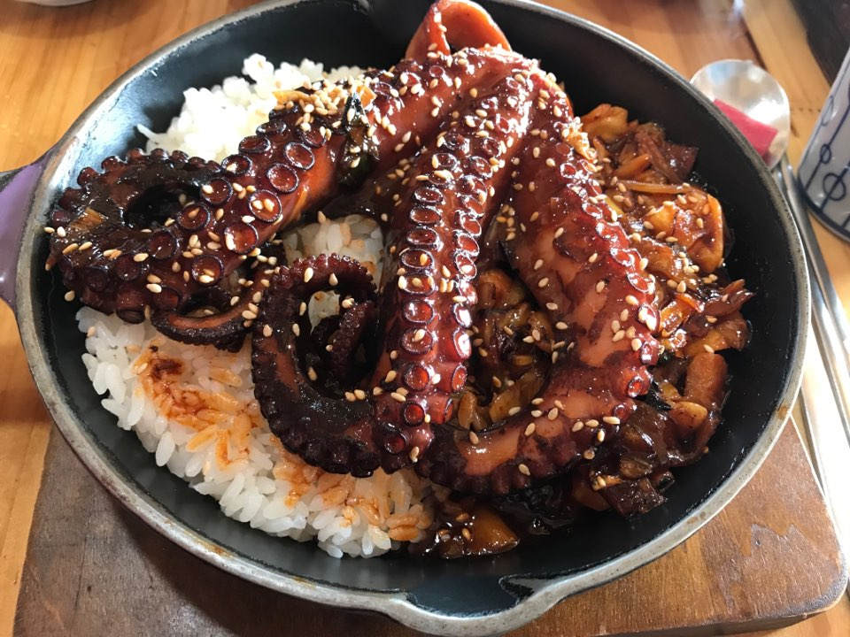
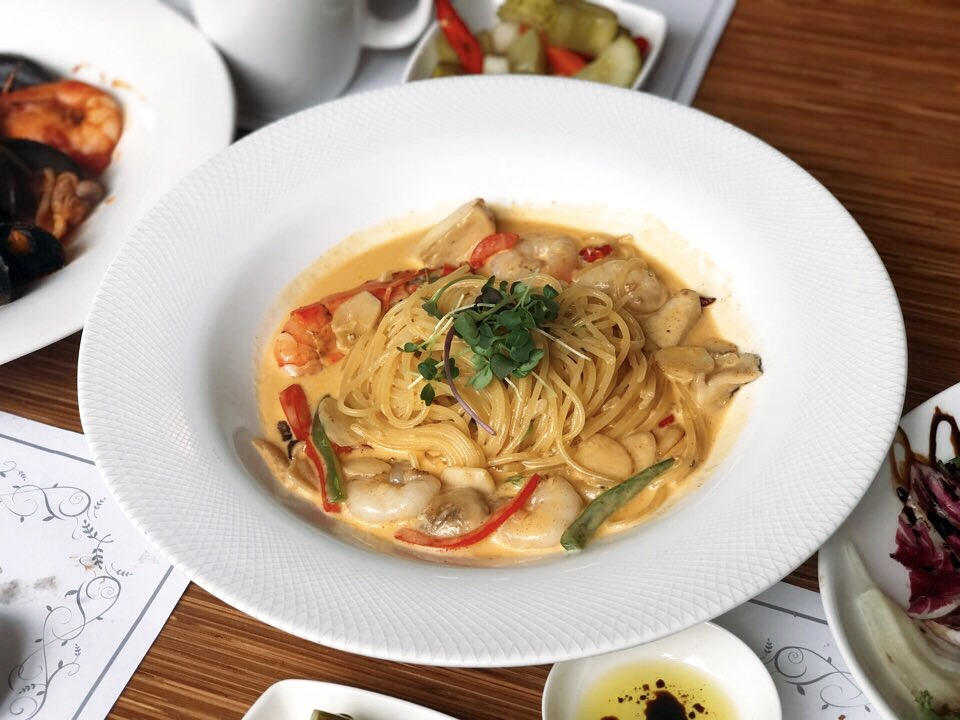
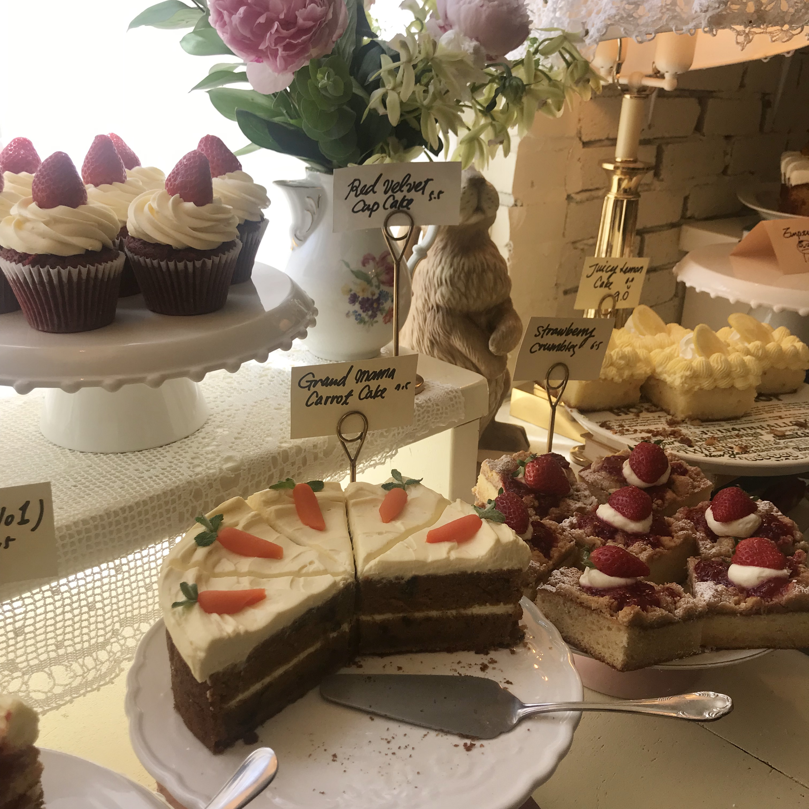

FOOD

2019.02.24_제주
돌문어 덮밥
통으로 올라간 돌문어 덮밥은 처음 먹어봤는데,
가위로 자르면서 먹는 재미가 있었다.
양념이 참 담백하고 매콤했다.
돌문어가 통통하고 쫄깃해서 식감이 좋았다.
너무 맛있어서 다음날에 또 먹었다.

2019.04.07_일산
로제 스파게티
생일을 맞아 제일 좋아하는 레스토랑에서 먹었던 로제 파스타.
탱탱한 면발이 로제 소스와 부드럽게 조화된다.
사실 이곳은 아이스아메리카노 맛집. 로제파스타와 같이 먹으면 꿀맛이다.

2019.08.07_망원동
레몬 케이크
망원동 유명 케이크 집에서 먹었던 레몬 케이크.
적당히 달달하면서도 상큼해서 순식간에 다 먹었던 기억이 난다.
초콜릿 케이크도 먹었었는데, 진하고 깊은 초콜릿이라
레몬케이크의 상큼하고 가벼운 맛을 잡아주었다.